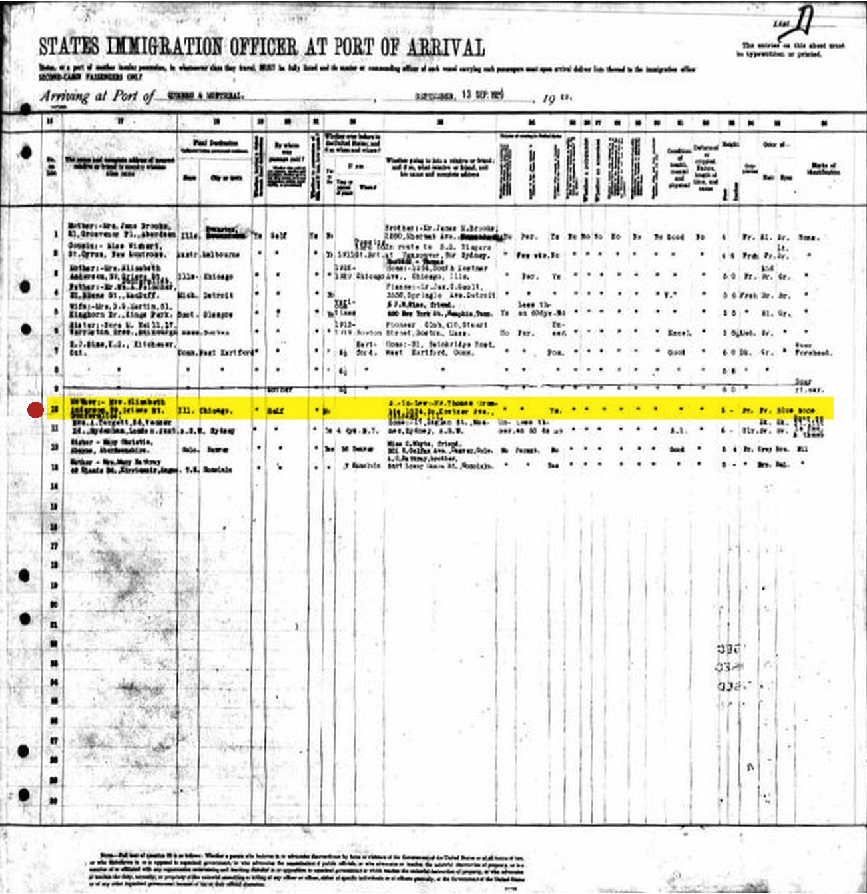

The Names He Carried · The Research
Doug Garceau, comp., “U.S. alien passenger manifest, List D, right half: arriving Quebec and Montreal,” DOC-036, The Names He Carried: The Research (https://douggarceau.com/the-names-he-carried/archive/items/doc-036.html : accessed [date]); original: U.S. National Archives, Record Group 85, M1464, roll 558, image 167.

This copy carries yellow highlighting or red outlining added for the book site. It is not on the original.
Tap an image to open it full size.
Everything as written, including misspellings. [?] marks an uncertain reading. Struck-through words are marked as struck through. Notes in square brackets describe the page and are not part of it.
[This is the second (right-hand) half of the same List D. Much of this copy is too faint to read; only what can be read is given here.] [Printed] ...STATES IMMIGRATION OFFICER AT PORT OF ARRIVAL [heading cut off at left] [Printed, small type, not legible at this resolution] [Handwritten, top right] List D. [Printed] The entries on this sheet must be typewritten or printed. Arriving at Port of QUEBEC & MONTREAL, SEPTEMBER 13 SEP 1929[?], 19__. [Columns, printed headings mostly too small to read. From left: 16 The name and complete address of nearest relative or friend in country whence alien came | 17 Final destination: State, City or town | 18 Whether having a ticket to such final destination | 19 By whom was passage paid? | 20 Whether in possession of $50, and if less, how much? | 21 Whether ever before in the United States; and if so, when and where? | 22 Whether going to join a relative or friend; and if so, what relative or friend, and his name and complete address | further columns for character questions, condition of health, height, complexion, color of hair and eyes, marks of identification] 1 | Mother:-Mrs.Jane Brooks, 21,Grosvenor Pl.,Aberdeen | Ills. [a city name struck through] | Yes | Self | Yes | No | Brother:-Mr.James M.Brooks, 2250,Sherman Ave.[struck through words] | No | Per. | Yes | No No No No No No Good No | 5 [height illegible] | Fr. Bl. Br. | None. 2 | Cousin:- Miss Wishart, St.Cyrus, New Montrose. | Austr. Melbourne | " | " | " | Yes 1913-1921 [rest illegible] | In route to S.S. Niagara at Vancouver, for Sydney. | [rest illegible] 3 | Mother:-Mrs.Elizabeth Anderson,39,Grieve St., Dunfermline. | Ills. Chicago | " | " | " | 1926-1929 Chicago | Home:-1534,South Kostner Ave., Chicago, Ills. | " | Per. | Yes | [rest ditto marks] | 5 0 | Fr. Br. Gr. 4 | Father:-Mr.Wm.A.Falconer, 31,Shore St., MacDuff. | Mich. Detroit | " | " | No | | Fiance:-Mr.Jas.C.Gault, 3036,Springle Ave.Detroit | [rest illegible] 5 | Wife:-Mrs.D.G.Martin,51, Kinghorn Dr.,Kings Park. | Scot. Glasgow | " | " | Yes | Vari-ous times | S.F.M.Sims, friend. 480 New York St.,Memphis,Tenn. | Yes | Less than 60 days. No | [rest illegible] 6 | Sister:-Nora M. Neill,17, Warriston Cres.,Edinburgh | Mass. Boston | " | " | " | 1913-1919 Boston | Pioneer Club,410,Stuart Street,Boston, Mass. | No | Per. | Un-cer. | ... Excel. | 5 [illegible] 7 | E.J.Sims,K.C., Kitchener, Ont. | Conn. West Hartford | " | " | " | Hart-ford. | Home:-31, Bainbridge Road, West Hartford, Conn. | " | " | Pos. | ... Good | 6 0 | Dk. Gr. | Scar forehead. 8 | " | " | " | " | " | " | " | [ditto marks] 9 | [struck through line] Mother [rest illegible] | Scar ri.ear. 10 | Mother:- Mrs.Elizabeth Anderson,39,Grieve St. Dunfermline. | Ill. Chicago. | " | Self | " | No | B.-in-Law:-Mr.Thomas Crombie,1534,So.Kostner Ave., Chicago, Ill. | " | " | Yes. | [ditto marks] | 6 – | Fr. Fr. Blue | None 11 | Mrs.A.Targett[?],56,Venner Rd.,Sydenham,London. | Aust.N.S.W. Sydney | " | " | Yes 4 dys.N.Y. | Home:-17,Raglan St.,Mosman,Sydney,N.S.W. | Un-cer. | Less than 60 days | A.1. | 6 – | Fr. [rest illegible] 12 | Sister - Mary Christie, Aboyne, Aberdeenshire. | Colo. Denver | " | " | Yes 36 Denver | Miss C.Whyte, friend. 201 S.Colfax Ave.,Denver,Colo. | No | Perm. | No | ... Good | 5 4 | Fr. Grey Brn. | Nil 13 | Mother - Mrs.Mary Rattray, 49 Glamis Rd.,Kirriemuir,Angus. | T.H. Honolulu | " | " | " Honolulu | Self[?] Lower Gean[?] St.,Honolulu. | " | Yes | [rest illegible] | 5 – | Brn. Hzl. 14–30 | [blank] [Handwritten in the right margin near lines 22–24] 332. 334. 335.[?] [Printed note at the bottom of the page, too small to read on this copy]